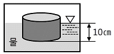
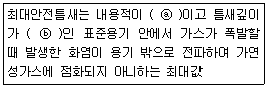
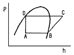
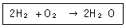
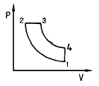
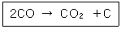
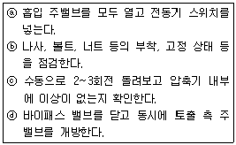
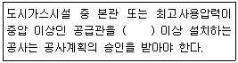
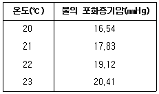
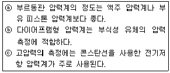

가스기사 (2011-06-12 기출문제)
1과목: 가스유체역학
1. 비중 0.8, 점도 5cP인 유체를 평균속도 10㎝/s로 내경 5㎝인 관을 사용하여 2㎞ 수송할 때 수반되는 손실수두는 약 몇 m인가?
- 0.163
- 0.816
- 1.63
- 8.16
(정답률: 26%)

2. 운동량의 단위를 옳게 나타낸 것은?
- m/s
- ㎏·m/s
- N
- J
(정답률: 58%)
3. 측정기기에 대한 설명으로 옳지 않은 것은?
- Piezometer : 탱크나 관 속의 작은 유압을 측정하는 액주계
- Micromanometer : 작은 압력차를 측정할 수 있는 압력계
- Mercury Barometer : 대기 절대압력을 물을 이용하여 측정하는 장치
- Inclined-tube manometer : 액주를 경사시켜 계측의 감도를 높인 압력계
(정답률: 75%)
4. 부력에 대한 설명 중 틀린 것은?
- 부력은 유체에 잠겨있을 때 물체에 대하여 수직 위로 작용한다.
- 부력의 중심을 부심이라 하고 유체의 잠긴 체적의 중심이다.
- 부력의 크기는 물체가 유체 속에 잠긴 체적에 해당하는 유체의 무게와 같다.
- 물체가 액체 위에 떠 있을 때는 부력이 수직 아래로 작용한다.
(정답률: 81%)
5. 실온에서 물의 절대점성계수 μ가 1.0×10-3㎏/m·s, 밀도 ρ는 1000㎏/m3이고, 공기의 절대점성계수 μ가 1.8×10-5㎏/m·s, 밀도 ρ는 1.2㎏/m3이다. 물의 동점성계수와 공기 동점성계수의 비는?
- 1 : 15
- 2 : 3
- 3 : 2
- 15 : 1
(정답률: 61%)
6. 유동장 내의 모든 점에서 주어진 순간에 유동방향에 접선이 되도록 유동장에 그려진 가상의 선은 무엇을 의미하는가?
- 시간선(timeline)
- 유적선(pathline)
- 유맥선(streakline)
- 유선(streamline)
(정답률: 58%)
7. 2차원 직각좌표계(x, y)상에서 속도 포텐셜(ø, velocity potential)이 ø＝Ux로 주어지는 유동장이 있다. 이 유동장의 흐름함수(Ψ，stream function ψ)에 대한 표현식으로 옳은 것은? (단，U는 상수이다.)
- U(x＋y)
- U(-x＋y)
- Uy
- 2Ux
(정답률: 65%)
8. 진공압력이 0.10㎏f/cm2이고, 온도가 20℃인 기체가 계기압력 7㎏f/cm2로 등온 압축되었다. 이때 압축 전 체적(V1)에 대한 압축 후의 체적(V2)비는 얼마인가? (단, 대기압은 720mmHg이다.)
- 0.11
- 0.14
- 0.98
- 1.41
(정답률: 30%)
9. 충격파와 에너지선에 대한 설명으로 옳은 것은?
- 충격파는 아음속 흐름에서 갑자기 초음속 흐름으로 변할 때에만 발생한다.
- 충격파가 발생하면 압력, 온도, 밀도 등이 연속적으로 변한다.
- 에너지선은 수력구배선보다 속도수두만큼 위에 있다.
- 에너지선은 항상, 상향 기울기를 갖는다.
(정답률: 66%)
10. 내경 1.6㎝인 관에서의 레이놀즈수가 23000 이었다. 관을 축소하여 내경을 0.4㎝로 했을 때 레이놀즈수는? (단, 유량의 변화는 없다.)
- 5750
- 23000
- 92000
- 368000
(정답률: 35%)
11. 단면적이 45cm2 인 원통형의 물체를 물 위에 놓았더니 그림과 같이 떠 있었다. 물체의 질량은 몇 ㎏인가?

- 0.45
- 4.5
- 0.9
- 9
(정답률: 44%)
12. 회전식 펌프에 해당하는 것은?
- 기어펌프
- 피스톤 펌프
- 플런저 펌프
- 다이어프램 펌프
(정답률: 79%)
13. S1 기본 단위에 해당하지 않는 것은?
- ㎏
- m
- w
- K
(정답률: 72%)
14. 20℃건조공기의 점성계수는 1.848×10-6㎏f·s/m2이다. 동점성계수를 구하면 약 몇 stokes인가? (단, 공기의 비중량은 1.2㎏f/m3이다.)
- 0.015
- 0.025
- 0.15
- 0.25
(정답률: 26%)
15. 반지름 200㎜, 높이 250㎜인 실린더 내에 20㎏의 유체가 차 있다. 유체의 밀도는 약 몇 ㎏/m3인가?
- 6.366
- 63.66
- 636.6
- 6366
(정답률: 55%)
16. 밀도가 892㎏/m3인 원유가 단면적이 2.165×10-3m2인 관을 통하여 1.388×10-3m3/s로 들어가서 단면적이 각각 1.314×10-3m2로 동일한 2개의 관으로 분할되어 나갈 때 분할되는 관내에서의 유속은 약 몇 m/s인가? (단, 분할되는 2개 관에서의 평균유속은 같다.)
- 1.036
- 0.841
- 0.619
- 0.528
(정답률: 49%)
17. 안지름 40cm인 관 속을 동점성계수 4stokes인 유체가 15cm/s의 평균속도로 흐른다. 이때 흐름의 종류는?
- 층류
- 난류
- 플러그 흐름
- 천이영역 흐름
(정답률: 63%)
18. 구형입자가 유체 속으로 자유낙하할 때의 현상으로 틀린 것은? (단. μ는 점성계수, d는 구의 지름, U는 속도이다.)
- Stokes range에서 항력(drag force)은 3πμdU이다.
- 입자에 작용하는 힘을 중력, 항력, 부력으로 구분할 수 있다.
- 항력계수(CD)는 레이놀즈 수가 증가할수록 커진다.
- 종말속도는 가속도가 감소되어 일정한 속도에 도달한 것이다.
(정답률: 70%)
19. 점도가 20poise인 기름이 채워진 두 개의 평행 평판 사이의 간격이 10㎜이다. 아래쪽 평판이 고정된 상태에서 위쪽의 평판을 5m/s 의속도로 이동시켰을 때 기름 속에 작용하는 전단응력은 몇 N/m2인가? (단, 유체의 속도분포는 선형이라고 가정한다.)
- 1
- 10
- 100
- 1000
(정답률: 40%)
20. 축류펌프의 특성이 아닌 것은?
- 체절상태로 운전하면 양정이 일정해진다.
- 비속도가 크기 때문에 회전속도를 크게 할 수 있다.
- 유량이 크고 양정이 낮은 경우에 적합하다.
- 유체는 임펠러를 지나서 축방향으로 유출된다.
(정답률: 46%)
2과목: 연소공학
21. 위험도는 폭발가능성을 표시한 수치로서 수치가 클수록 위험하며 폭발상한과 하한의 차이가 클수록 위험하다. 공기 중 수소(H2)의 위험도는 얼마인가?
- 0.94
- 1.⑤
- 17.75
- 71
(정답률: 66%)
22. 연소에 대한 설명 중 옳지 않은 것은?
- 연료가 한번 착화하면 고온으로 되어 빠른 속도로 연소한다.
- 환원반응이란 공기의 과잉 상태에서 생기는 것으로 이때의 화염을 환원염이라 한다.
- 고체, 액체 연료는 고온의 가스분위기 중에서 먼저 가스화가 일어난다.
- 연소에 있어서는 산화 반응뿐만 아니라 열분해반응도 일어난다.
(정답률: 76%)
23. 고압가스안전관리기준에 의한 안전간격 측정방법은 다음과 같다. ⓐ, ⓑ에 들어갈 적당한 말은?

- ⓐ 8리터, ⓑ 15㎜
- ⓐ 8리터, ⓑ 25㎜
- ⓐ 16리터, ⓑ 15㎜
- ⓐ 16리터, ⓑ 25㎜
(정답률: 58%)
24. 압력이 1기압이고 과열도가 10℃인 수증기의 엔탈피는 약 몇 ㎉/㎏인가? (단, 100℃ 때의 물의 증발 잠열 539㎉/㎏이고, 물의 비열 1㎉/㎏·℃, 수증기의 비열 0.45㎉/㎏·℃, 기준 상태는 0℃와 1atm으로 한다. )
- 539
- 639
- 643.5
- 653.5
(정답률: 59%)
25. 다음 중 연소범위에 대한 설명이 잘못된 것은?
- LFL(연소하한계)은 온도가 100℃ 증가할 때마다 8% 정도 감소한다.
- UFL(연소상한계)은 온도가 증가하여도 거의 변화가 없다.
- 대단히 낮은 압력(＜50㎜Hg)을 제외하고 압력은 LFL(연소하한계)에 거의 영향을 주지 않는다.
- UFL(연소상한계)은 압력이 증가할 때 현격히 증가된다.
(정답률: 53%)
26. 다음 그림은 어떤 냉매의 P-h 선도이다. 냉매의 증발 과정을 표시한 것은?

- A → B
- B → C
- C → D
- D → A
(정답률: 57%)
27. 습증기의 엔트로피가 압력 2026.5kPa에서 3.22kJ/㎏·K이고 이 압력에서 포화수 및 포화증기의 엔트로피가 각각 2.44kJ/㎏·K 및 6.35kJ/㎏·K이라면, 이 습증기의 습도는 약 몇 %인가?
- 56
- 68
- 75
- 80
(정답률: 30%)
28. 다음 중 가역단열 과정인 것은?
- 등온과정
- 정적과정
- 등엔탈피과정
- 등엔트로피과정
(정답률: 65%)
29. 수소-산소 혼합기가 다음과 같은 반응을 할 때 이 혼합기를 무엇이라 하는가?

- 희박혼합기
- 이상혼합기
- 양론혼합기
- 과농혼합기
(정답률: 64%)
30. 다음 [그림]에 해당하는 기관은?

- 랭킨 사이클
- 오토 사이클
- 디젤 사이클
- 카르노 사이클
(정답률: 63%)
31. 공기흐름이 난류일 때 가스연료의 연소현상에 대한 설명으로 옳은 것은?
- 연소가 양호하여 화염이 짧아진다.
- 불완전연소에 의한 열효율이 감소한다.
- 화염이 뚜렷하게 나타난다.
- 화염이 길어지면서 완전연소가 일어난다.
(정답률: 59%)
32. 1㎾h의 열당랑은?
- 376㎉
- 427㎉
- 632㎉
- 860㎉
(정답률: 73%)
33. 카르노 사이클에서 열량의 흡수는 어느 과정에서 이루어지는가?
- 단열압축
- 등온압축
- 단열팽창
- 등온팽창
(정답률: 50%)
34. 가연성가스와 공기를 혼합하였을 때 폭굉범위는 일반적으로 어떻게 되는가?
- 폭발범위와 동일한 값을 가진다.
- 가연성가스의 폭발상한계값보다 큰 값을 가진다.
- 가연성가스의 폭발하한계값보다 작은 값을 가진다.
- 가연성가스의 폭발하한계와 상한계값 사이에 존재한다.
(정답률: 72%)
35. 발열랑 24000㎉/m3인 액화석유가스 1m3에 공기 3m3를 혼합하면 혼합가스의 발열량은 얼마가 되는가?
- 6000㎉/m3
- 7000㎉/m3
- 8000㎉/m3
- 9000㎉/m3
(정답률: 65%)
36. 전실 화재(Flash Over)의 방지대책으로 가장 거리가 먼 것은?
- 천장의 불연화
- 가연물량의 제한
- 화원의 억제
- 폭발력의 억제
(정답률: 59%)
37. 카르노 냉동사이클에서 냉동기의 성적계수(ω)를 옳게 나타낸 것은? (단. TA : 냉동유지온도, TB : 열방출온도이다.)
- (TB-TA)/TB
- (TB-TA)/TA
- TA/(TB-TA)
- TB/(TB-TA)
(정답률: 54%)
38. 자연발화온도(AIT)는 외부에서 착화원을 부여하지 않고 증기가 주위의 에너지로부터 자발적으로 발화하는 최저 온도이다. 다음 설명 중 틀린 것은?
- 산소농도가 클수록 AIT는 낮아진다.
- 계의 압력이 높을수록 AIT는 낮아진다.
- 부피가 클수록 AIT는 낮아진다.
- 포화탄화수소 중 iso-화합물이 n-화합물보다 AIT가 낮다.
(정답률: 64%)
39. 위험장소 분류 중 상용의 상태에서 가연성가스가 체류해 위험하게 될 우려가 있는 장소, 정비·보수 또는 누출 등으로 인하여 종종 가연성가스가 체류하여 위험하게 될 우려가 있는 장소는?
- 제 0종 위험장소
- 제 1종 위험장소
- 제 2종 위험 장소
- 제 3종 위험 장소
(정답률: 63%)
40. 실제기체의 상태에 관한 설명 중 가장 거리가 먼 것은?
- 실제기체란 일반적으로 분자간의 인력이 있고, 차지하는 부피가 있는 기체이다.
- 대응상태의 원리란 같은 환산온도, 환산압력에서는 모든 기체가 동일한 압축인수를 갖는다는 것이다.
- 실제기체 혼합물이 차지하는 전압은 각 기체가 단독으로 같은 부피, 같은 온도에서 나타내는 압력, 즉 순성분 압력의 합과 같다.
- 실제기체의 상태 방정식(PV＝ZnRT)은 이상기체의 상태식에 보정 계수(Z)를 사용하여 나타낼 수 있다.
(정답률: 60%)
3과목: 가스설비
41. 다음 반응으로 진행되는 접촉분해 반응 중 카본생성을 방지하는 방법으로 옳은 것은?

- 반응온도 : 낮게, 반응압력 : 높게
- 반응온도 : 높게, 반응압력 : 낮게
- 반응온도 : 낮게, 반응압력 : 낮게
- 반응온도 : 높게, 반응압력 : 높게
(정답률: 54%)
42. 구형탱크의 용적이 1000m3인 저장탱크에 비중이 0.6인 LPG를 저장할 때 저장용량은 옆 ton인가?
- 400
- 480
- 540
- 600
(정답률: 48%)
43. 플래어스택에서의 소음 발생원인으로 가장 거리가 먼 것은?
- 플래어 가스가 연소할 때
- 플래어 량을 감소시킬 때
- 플래어 가스와 주변 공기가 혼합될 때
- 그을음 없는 연소를 위하여 스팀을 주입할 때
(정답률: 64%)
44. 다음 중 펌프의 실양정(actual head)을 가장 바르게 나타낸 것은?
- 흡입실양정＋송출실양정
- 흡입실양정＋송출실양정＋총손실수두
- 흡입실양정＋송출실양정＋속도수두
- 흡입실양정＋송출실양정＋전양정
(정답률: 52%)
45. 용기용 밸브는 가스 충전구의 형식에 따라 A형, B형, C형의 3종류가 있다. 가스 충전구가 암나사로 되어 있는 것은?
- A형
- B형
- A, B형
- C형
(정답률: 75%)
46. 전양정 20m, 유량 1.8m3/min, 펌프의 효율이 70%인 경우 펌프의 축동력(L)은 약 몇 마력(PS) 인가?
- 11.4
- 13.4
- 15.5
- 17.5
(정답률: 55%)
47. 도시가스사업자가 공급하는 도시가스의 물성을 측정하고 그 결과를 기록하여야 하는 항목이 아닌 것은?
- 온도
- 압력
- 열량
- 유해성분
(정답률: 40%)
48. 고급탄화수소를 수소화 분해법으로 연료가스를 제조할 때 필요하지 않은 반응은?
- C4H10＋3H2 ⇄ 4CH4
- C3H8＋2H2 ⇄ 3CH4
- C2H6＋H2 ⇄ 2CH4
- CH4 ⇄ 2H2＋CO
(정답률: 56%)
49. 터보팽창기는 처리가스에 윤활유가 혼입되지 않으며 처리 가스량이 10000m3/h 정도로 크다. 터보 팽창기의 종류에 해당하지 않는 것은?
- 왕복동식
- 충동식
- 반동식
- 반경류 반동식
(정답률: 56%)
50. 왕복식 압축기의 특징이 아닌 것은?
- 용적형이다.
- 압축효율이 높다.
- 용량조정의 범위가 넓다.
- 점검이 쉽고 설치면적이 적다.
(정답률: 60%)
51. 4극 3상 전동기를 펌프와 직결하여 운전할 때 전원주파수가 60Hz이면 펌프의 회전수는 몇 rpm인가? (단, 미끄럼율은 2%이다.)
- 1562
- 1663
- 1764
- 1865
(정답률: 42%)
52. CO2 : 30vol%, O2 : 5vol%, N2 : 65vol%로 구성된 혼합기체의 평균 분자량은?
- 18.8
- 27.8
- 29.0
- 33.0
(정답률: 54%)
53. LP가스 충전소에서 LP가스 압축기를 수리한 후 운전을 하고자 할 때 다음 [보기]를 가장 올바르게 나열한 것은?

- ⓑ → ⓐ → ⓓ → ⓒ
- ⓑ → ⓒ → ⓐ → ⓓ
- ⓓ → ⓑ → ⓒ → ⓐ
- ⓓ → ⓒ → ⓐ → ⓑ
(정답률: 55%)
54. 지중 또는 수중에 설치된 양극금속과 매설배관을 전선으로 연결해 양극금속과 매설배관 사이의 전지작용으로 부식을 방지하는 방법을 무엇이라 하는가?
- 희생양극법
- 배류법
- 외부전원법
- 갈바닉부식방지법
(정답률: 63%)
55. 다음 펌프 중 시동하기 전에 프라이밍이 필요한 펌프는?
- 터빈펌프
- 기어펌프
- 플린저펌프
- 피스톤펌프
(정답률: 50%)
56. 공기액화분리장치 내부를 세척할 때 가장 적당한 세정액은?
- N2
- O2
- CO2
- CCl4
(정답률: 68%)
57. 다음 중 최고사용압력이 고압인 배관(액화가스의 경우는 0.2MPa 이상)에서 사용하는 배관은?
- KS D 3514(가스용 폴리에틸렌관)
- KS D 3562(압력배관용 탄소강관)
- KS D 3583(배관용 아크용접 탄소강관)
- KS D 3589(폴리에틸렌 피복강관)
(정답률: 65%)
58. 고압장치용 금속재료의 고온부식에 대한 설명으로 틀린 것은?
- Al, Cr, Mo은 질소와 친화력이 크므로 이 성분을 함유한 강은 질화되기 쉽다.
- H2S는 Fe, Ni을 심하게 부식시킨다.
- 암모니아 합성, 석유의 수소화분해, 수소화 탈황 등에 사용하는 탄소강은 수소에 침식된다.
- CO를 많이 함유한 가스는 고온, 고압에서 Al. Ti. V과 화합물을 생성한다.
(정답률: 50%)
59. 도시가스의 저발열량이 10400㎉/m3이고 비중이 0.5일 때 웨버지수(WI)는 얼마인가?
- 14142
- 14708
- 18257
- 27386
(정답률: 64%)
60. 액화석유가스용 용기 잔류가스 회수장치의 구조에 대한 설명으로 옳은 것은?
- 펌프는 그 토출압력이 1.0MPa 이하인 것으로 한다.
- 압축기의 토출측에는 액 분리기를 설치한다.
- 안전밸브의 방출구는 잔류가스 회수장치의 정상부로부터 1m 이상인 곳에 설치한다.
- 기체 이송 배관에는 기체 흐름을 눈으로 확인할 수 있는 투시창(Sight glass)을 설치한다.
(정답률: 34%)
4과목: 가스안전관리
61. 방폭전기기기 설비의 부품이나 정션박스(junction box), 풀박스(pull box)는 어떤 방폭구조로 하여야 하는가?
- 압력방폭구조(p)
- 내압방폭구조(d)
- 유입방폭구조(o)
- 특수방폭구조(s)
(정답률: 54%)
62. 내용적이 3000L인 용기에 액화암모니아를 저장하려고 한다. 용기의 저장능력은 몇 ㎏인가? (단, 암모니아 정수는 1.86이다.)
- 1613
- 2324
- 2796
- 5580
(정답률: 45%)
63. 아황산가스의 제독제가 아닌 것은?
- 소석회
- 가성소다수용액
- 탄산소다수용액
- 물
(정답률: 46%)
64. 고압가스안전관리법에서 정한 가스에 대한 설명으로 옳은 것은?
- 트리메틸아민은 가연성가스이지만 독성가스는 아니다.
- 독성가스 분류기준은 허용농도가 백만분의 2000 이하인 것을 말한다.
- 가압·냉각 등의 방법에 의하여 액체상태로 되어 있는 것으로서 대기압에서의 비점이 섭씨 40도 이하 또는 상용의 온도 이하인 것을 가연성가스라 한다.
- 일정한 압력에 의하여 압축되어 있는 가스를 압축가스라 한다.
(정답률: 54%)
65. 공기나 산소 등이 없어도 압력이 상승하거나 온도가 높아지면 단일 가스의 분해에 의해서 폭발하는 성질을 가지는 가스가 아닌 것은?
- O3
- F2
- N2H4
- C2H40
(정답률: 52%)
66. 도시가스 공급관의 접합은 용접을 원칙으로 한다. 다음 중 비파괴시험을 반드시 실시하여야 하는 것은?
- 건축물 외부에 저압으로 노출된 호칭지름 100㎜인 사용자 공급관
- 가스용 폴리에틸렌(PE) 배관
- 건축물 내부에 설치된 저압으로 호칭지름 50㎜인 사용자 공급관(단, 환기가 불량하며 가스누출경보기가 설치되어 있지 않음)
- 샤시가 없는 개방된 복도식 아파트의 복도에 설치된 저압으로 호칭지름 32㎜인 사용자 공급관
(정답률: 56%)
67. 고압가스 냉동시설에서 냉동능력의 합산기준으로 틀린 것은?
- 냉매가스가 배관에 의하여 공통으로 되어있는 냉동 설비
- 냉매계통을 달리하는 2개 이상의 설비가 1개의 규격품으로 인정되는 설비 내에 조립되어 있는 것
- 1원(元) 이상의 냉동방식에 의한 냉동설비
- Brine을 공통으로 하고 있는 2 이상의 냉동설비
(정답률: 60%)
68. 정전기 제거설비를 정상상태로 유지하기 위한 검사항목이 아닌 것은?
- 지상에서 접지저항치
- 지상에서의 접속부의 접속 상태
- 지상에서의 접지접속선의 절연여부
- 지상에서의 절선 그밖에 손상부분의 유무
(정답률: 60%)
69. 도시가스의 총 발열량이 10000㎉/m3, 도시가스의 공기에 대한 비중이 0.66일 때 이 가스의 웨베지수는?
- 16100
- 12309
- 10620
- 6600
(정답률: 59%)
70. LPG를 용기에 충전할 경우 냄새가 나는 물질(부취제)의 농도를 공기 중의 흔합비율 용량으로 얼마의 상태에서 감지할 수 있도록 설비를 하여야 하는가?
- 1/100
- 1/200
- 1/500
- 1/1000
(정답률: 60%)
71. 용적 100L의 초저온용기에 200㎏의 산소를 넣고 외기온도 25℃인 곳에서 10시간 방치한 결과 180㎏의 산소가 남아 있다. 이 용기의 침입열량(㎉/h·℃·L)의 값과, 단열성능시험에의 합격여부를 판정한 것으로 옳은 것은? (단, 액화산소의 비점은 -183℃, 기화잠열은 51㎉/㎏이다.)
- 0.02, 불합격
- 0.⑤, 합격
- 0.0⑤, 불합격
- 0.008, 합격
(정답률: 51%)
72. 다음 ( )안에 들어갈 것으로 알맞은 것은?

- 10m
- 20m
- 50m
- 100m
(정답률: 52%)
73. 고압가스 일반제조시설에서 역류방지밸브를 반드시 설치하지 않아도 되는 곳은?
- 아세틸렌의 고압건조기와 충전용 교체 밸브 사이의 배관
- 아세틸렌을 압축하는 압축기의 유분리기와 고압건조기와의 사이
- 가연성가스를 압축하는 압축기와 충전용 주관과의 사이
- 암모니아 또는 메탄올의 합성탑 및 정제탑과 압축기와의 사이의 배관
(정답률: 37%)
74. 가스사용시설에서 가스설비 설치기준에 대한 설명으로 틀린 것은?
- 호스의 길이는 연소기까지 3m 이내로 하되, 호스는 T형으로 연결하지 아니한다.
- 연소기는 안전을 확보하기 위하여 최고사용압력의 1.1배 또는 8.4kPa 중 높은 압력 이상에서 내압성능을 가지는 것으로 한다.
- 압력조정기를 설치하는 경우 그 압력조정기는 원칙적으로 실외에 설치한다.
- 지하층에 설치된 가스사용시설에는 지상에서 가스의 공급을 용이하게 차단할 수 있는 장치를 설치한다.
(정답률: 44%)
75. 허용농도를 초과하는 독성가스의 용기에 의한 운반기준으로 틀린 것은?
- 독성가스 중 가연성가스와 조연성가스는 동일차량 적재함에 운반하지 아니한다.
- 차량의 앞뒤에 붉은 글씨로 “위험고압가스”, “독성가스”라는 경계표시를 하여야 한다.
- 압축 독성가스 100m3 이상을 운반할 때는 운반책임자를 동승시켜야 한다.
- 2000㎏ 이상의 액화 독성가스를 운반할 때는 운반책임자를 동승시켜야 한다.
(정답률: 55%)
76. 지름 4m의 원통형 저장탱크 2개를 지하에 인접하여 설치하는 경우 두 탱크 사이의 최소 안전거리는 몇 m 이상이어야 하는가?
- 0.5
- 1
- 2
- 3
(정답률: 56%)
77. 저장능력이 500㎏ 이상인 액화염소사용시설의 저장설비는 그 외면으로부터 제1종 보호시설까지 몇 m 이상의 거리를 유지하여야 하는가?
- 12
- 15
- 17
- 19
(정답률: 51%)
78. 액화석유가스 사용시설에 설치되는 조정압력 3.3kPa 이하인 조정기의 안전장치 작동정지압력의 기준은?
- 7kPa
- 5.6kPa~8.4kPa
- 5.04kPa~8.4kPa
- 9.9kPa
(정답률: 58%)
79. 공정에 존재하는 위험요소들과 공정의 효율을 떨어뜨릴 수 있는 운전상의 문제점을 찾아낼 수 있는 정성적인 위험평가 기법으로 산업체(화학공장)에서 일반적으로 사용되는 것은?
- Check list법
- FTA법
- ETA법
- HAZOP법
(정답률: 62%)
80. 가스누출 검지경보장치의 검지에서 발신까지 걸리는 시간으로 옳은 것은?
- 경보농도의 1.2배 농도에서 15초 이내
- 경보농도의 1.5배 농도에서 20초 이내
- 경보농도의 1.6배 농도에서 30초 이내
- 경보농도의 1.7배 농도에서 40초 이내
(정답률: 44%)
5과목: 가스계측기기
81. 가스 분석을 위하여 헴펠법으로 분석할 경우 흡수액이 KOH 30g/H2O 100mL인 가스는?
- CO2
- CmHn
- O2
- CO
(정답률: 64%)
82. 마노미터를 사용한 오리피스 유량계로 물이 흐르고 있는 관 속 두 지점의 압력차를 측정하니 5㎝Hg를 얻었다. 이 압력차를 물기둥의 높이차로 하면 약 몇 ㎝인가? (단, 수은의 비중은 13.6이다.)
- 63
- 80
- 92
- 126
(정답률: 36%)
83. 온도가 21℃에서 상대습도 60%의 공기를 압력은 변화하지 않고 온도를 22.5℃로 할 때, 공기의 상대습도는 약 얼마인가?

- 52.41%
- 53.63%
- 54.13%
- 55.95%
(정답률: 46%)
84. 오르자트(Orsat)법에서 가스 흡수 순서를 바르게 나타낸 것은?
- CO2 → O2 → CO
- CO2 → CO → O2
- O2 → CO → CO2
- O2 → CO2 → CO
(정답률: 67%)
85. 다음 중 LPG의 정량분석에서 흡광도의 원리를 이용한 가스 분석법은?
- 적외선 흡수법
- 저온 분류법
- 질량 분석법
- 가스크로마토그래피법
(정답률: 64%)
86. 열기전력에 의한 제백효과(seebeck effect)를 이용하여 온도를 측정을 하는 것은?
- 열전대온도계
- 저항온도계
- 광고온계
- 방사온도계
(정답률: 68%)
87. 방사선식 액면계에 대한 설명으로 틀린 것은?
- 측정범위는 25m 정도이다.
- 레벨계는 용기 내측에 검출기를 설치한다.
- 방사선원은 코발트60(CO60)의 γ선이 이용된다.
- 용해 금속의 레벨측정 등에 이용된다.
(정답률: 46%)
88. 목표값이 미리 정해진 계측에 따라 시간적 변화를 할 경우 목표값에 따라 변하도록 하는 제어는?
- 정치제어
- 추종제어
- 캐스케이드 제어
- 프로그램제어
(정답률: 55%)
89. 다음 중 정밀도가 높은 것이 요구되는 미압의 측정에 가장 적합한 압력계는?
- U자관식 액주압력계
- 경사관식 액주압력계
- 부르동관식 압력계
- 금속다이어프램식 압력계
(정답률: 46%)
90. 다음 중 가스의 굴절률 차이를 이용하여 농도를 측정하는 방법은?
- 안전등형
- 간섭계형
- 열선형
- 흡광광도법
(정답률: 39%)
91. 다음 중 수정 등의 결정체에 압력을 가할 때 표면에 발생하는 전기적 변화의 특성을 이용하는 압력계는?
- 부르동관 압력계
- 벨로우즈 압력계
- 다이어프램 압력계
- 피에조 압력계
(정답률: 65%)
92. 가스미터에 의한 압력손실이 적어 사용 중 기압차의 변동이 거의 없고, 유량이 정확하게 계량되는 계측기는?
- 막식가스미터
- 루츠미터
- 로터리피스톤식미터
- 습식가스미터
(정답률: 59%)
93. 가스크로마토그래피의 캐리어가스로 이용되는 것으로만 나열된 것은?
- He, H2, Ar, CO
- Ar, N2, H2, O2
- H2, N2, Ar, He
- H2, N2, He, CO2
(정답률: 61%)
94. 열전대 사용상의 주의사항 중 오차의 종류는 열적오차와 전기적인 오차로 구분할 수 있다. 다음 중 열적 오차에 해당되지 않는 항목은?
- 삽입 전이의 영향
- 열복사의 영향
- 열 저항 증가에 의한 영향
- 전자 유도의 영향
(정답률: 60%)
95. 막식가스미터의 경우 계량막 밸브의 누설, 밸브와 밸브 시트 사이의 누설 등이 원인이 되는 고장은?
- 부동(不動)
- 불통(不通)
- 누설(遍池)
- 기차(器差)불량
(정답률: 53%)
96. 가스미터의 출구측 배관에 입상배관을 피하여 설치하는 가장 주된 이유는?
- 설치 면적을 줄일 수 있다.
- 검침 및 수리 등의 작업이 편리하다.
- 배관의 길이를 줄일 수 있다.
- 가스미터 내 밸브 시트 등이 동결될 우려가 있다.
(정답률: 63%)
97. 다음 [보기]의 압력계에 대한 설명 중 옳은 것을 모두 나열한 것은?

- ⓐ
- ⓑ
- ⓑ, ⓒ
- ⓐ, ⓑ, ⓒ
(정답률: 36%)
98. 다음 중 공차(公差)에 대하여 가장 바르게 나타낸 것은?
- 계랑기 고유오차의 최소 허용 한도
- 계랑기 고유오차의 최대 허용 한도
- 계량기 검정오차의 규정 허용 한도
- 계랑기 사용오차의 조정 허용 한도
(정답률: 61%)
99. 광고온계의 특징에 대한 설명으로 틀린 것은?
- 접촉식으로는 가장 정확하다.
- 약 3000℃까지 측정이 가능하다.
- 방사온도계에 비해 방사율에 의한 보정량이 적다.
- 측정 시 사람의 손이 필요하므로 개인오차가 발생한다.
(정답률: 53%)
100. 가스미터의 기차를 측정하기 위하여 기준기로 지시량을 측정해보니 100m3를 나타내었다. 그 결과 기차가 3%로 계산되었다면 이 가스미터의 지시량은 몇 m3을 나타내고 있는가?
- 103
- 108
- 172
- 178
(정답률: 52%)
Reynolds number (Re) = (유체 밀도 × 평균속도 × 내경) / 점도
= (0.8 × 10^-3 kg/cm^3 × 10 cm/s × 5 cm) / (5 cP × 10^-3 Pa·s)
= 80
Reynolds 수가 4000 이상이면 유동은 터빈트 유동으로 전환되어 손실수두가 증가한다. 따라서 이 문제에서는 터빈트 유동이 발생한다.
터빈트 유동에서의 손실수두 계산식은 다음과 같다.
손실수두 = (32 × 점도 × 길이 × 평균속도) / (내경^2 × 중력가속도 × 유체 밀도)
= (32 × 5 cP × 2 km × 10 cm/s) / (5 cm^2 × 980 cm/s^2 × 0.8 × 10^-3 kg/cm^3)
= 1.63 m
따라서 정답은 1.63 이다.